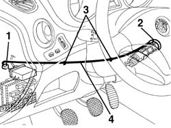

5580E08 aerial for alpha code - r r
- Path
- Procedures > 55 ELECTRICAL EQUIPMENT > 5580 SPECIAL ACCESSORIES > 5580E anti-theft device > 5580E08 aerial for alpha code - r r
- Kind
- repair procedure (removal / refitting; the operation number is the code)
- Applies to
- all engines; all production periods
- Interactive page
- https://sloeber94.github.io/elrnDB-a156/en/#/3238540
Applies to: all engines; all production periods
 Removing
Removing
 Refitting
Refitting7040A26 steering column trim - r+r
1. Disconnect the antenna connection from the power unit.
2. Remove the antenna from the starting block.
3. Free the cable from the check clamps.
4. Remove the antenna unit.

Applies to: all engines; all production periods
Refitting
RemovingCheck that the antenna is not damaged.
Reassemble the antenna unit.
Fix the cable with the check clamps.
Put the antenna on the starting block.
Reconnect the electric connection to the power unit.
7040A26 steering column trim - r+r
Check the system functionality by means of Examiner or other diagnosis instruments.